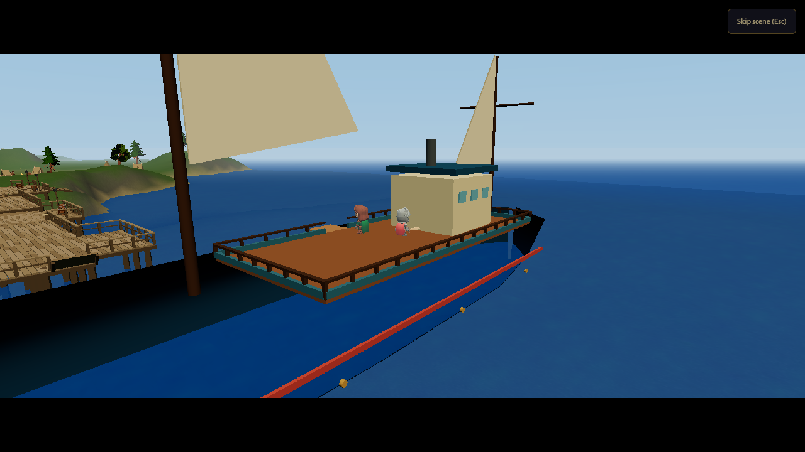
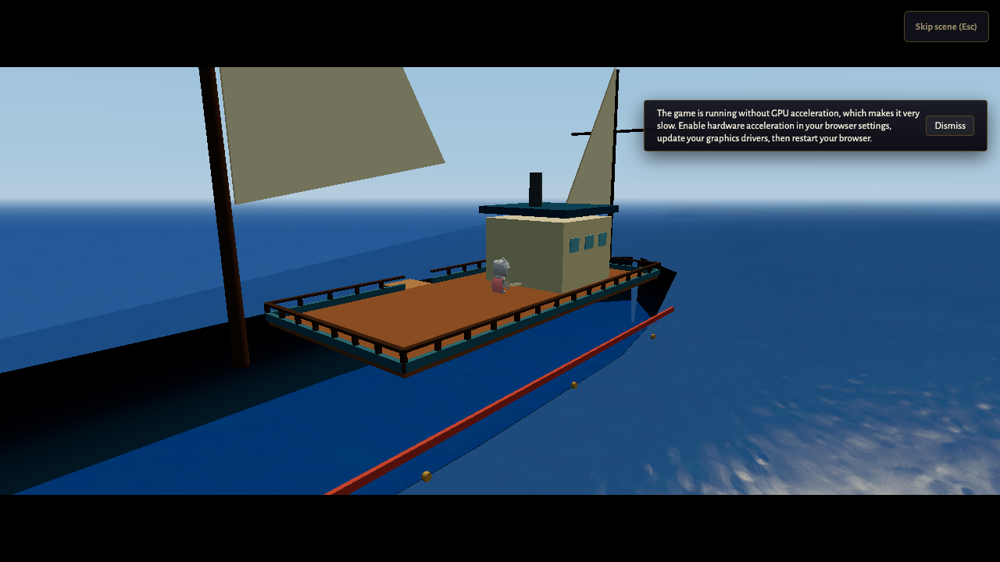
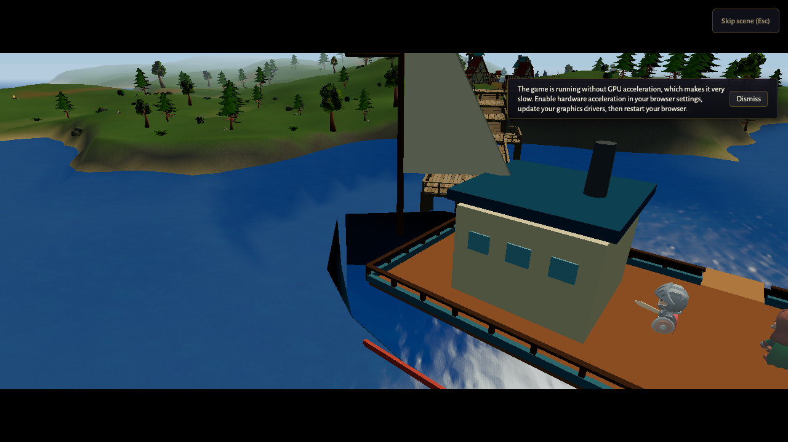
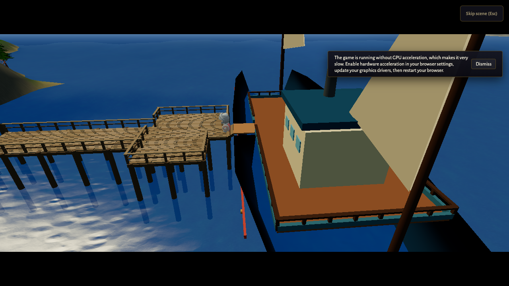
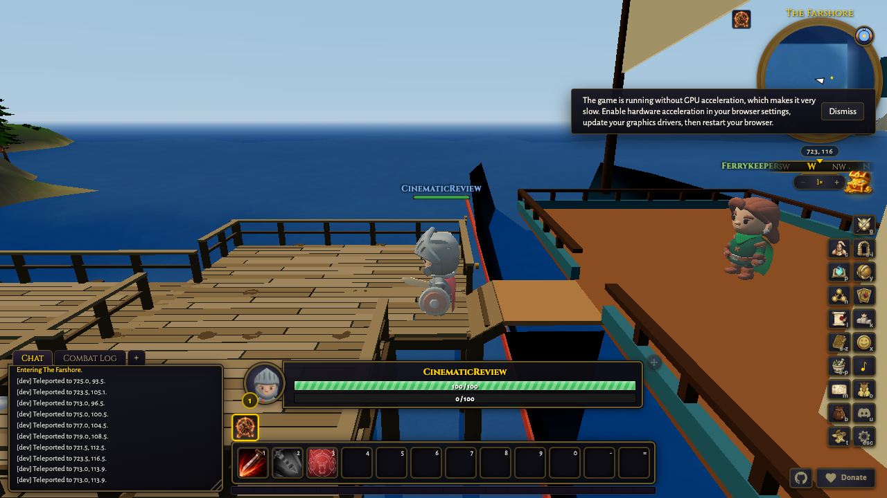
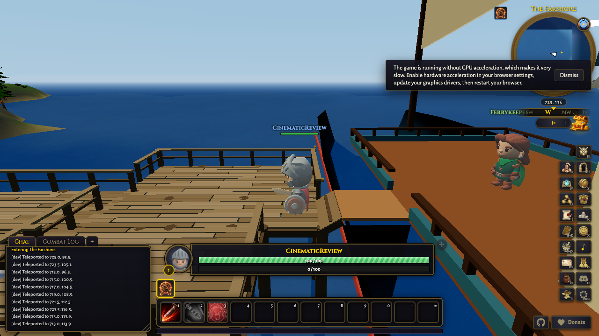

Target 2.325s
Measured 2.5s
Cut window 0.45s to 4.2s. camera cut at 0.45s

Target 6.35s
Measured 6.5s
Cut window 4.2s to 8.5s. camera cut at 4.2s

Target 12s
Measured 12.05s
Cut window 8.5s to 15.5s. camera cut at 8.5s

Target 18.5s
Measured 18.6s
Cut window 15.5s to 21.5s. camera cut at 15.5s

Target 21.95s
Measured not available
Cut window 21.95s to 21.95s. after scene end

Target 22.95s
Measured not available
Cut window 22.95s to 22.95s. HUD restored